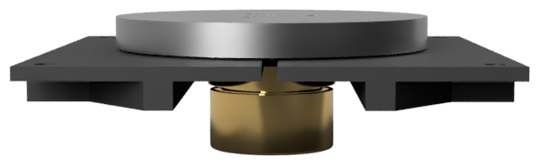

CubeDesign 2026Escola Politécnica · USP
Hermes · ADCS
Attitude control
After release, the satellite first has to stop tumbling. A reaction wheel slows the spin, then the ADCS points the satellite using light sensors.

60RPM
Initial spin the rate-damping mode is designed to remove
<5°
Accuracy required for finding the light-source direction
10Hz
Control loop rate on the microcontroller
Gyroscope, magnetometer and LDR light sensors fused with a complementary filter · BLDC reaction wheel, EC-20 flat motor · validated on a one-axis rotating test platform